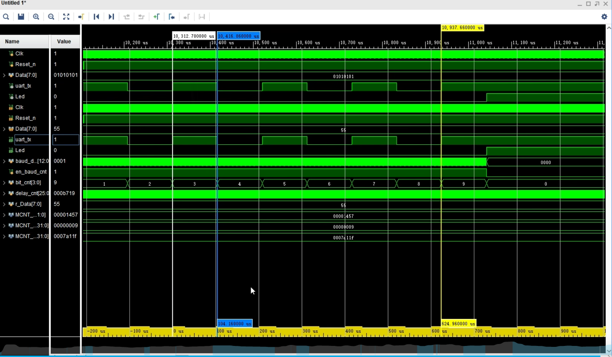
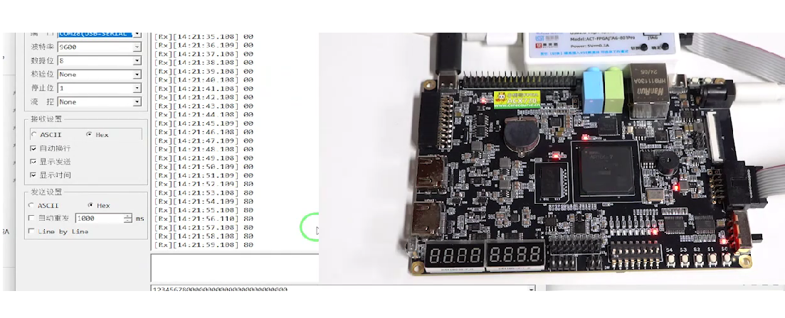

Project Overview
I engineered a high-precision UART (Universal Asynchronous Receiver-Transmitter) module in Verilog, designed for reliable serial communication between an FPGA and external peripherals. Unlike standard timer-based transmitters, this project implements a professional Event-Driven Handshake Protocol, allowing for asynchronous data transfer controlled by a central CPU or state machine.

Handshake Architecture
The core of this module is the Send_Go and Tx_Done handshake mechanism. To prevent data corruption, the system utilizes a snapshot latch; the moment Send_Go is pulsed, the 8-bit parallel data is captured into an internal register. This allows the master system to immediately process new data without interfering with the active serial transmission.
I calculated the baud metronome to operate at 9600 Baud on a 50MHz master clock, requiring exactly 5208 clock ticks per bit. The module ensures deterministic timing by using a continuous-assignment monitoring wire to reset the enable-switch the exact nanosecond the stop bit finishes.
Technical Logic
assign w_Tx_Done = ((bit_cnt == 9) && (baud_div_cnt == MCNT_BAUD));
always@(posedge Clk) begin
if(Send_Go) en_baud_cnt <= 1;
else if(w_Tx_Done) en_baud_cnt <= 0;
end
Verification & Simulation
Challenge: Simulation Time Scaling. Real-time UART simulation at 9600 baud requires millions of nanoseconds to observe a single frame. This makes standard behavioral simulation inefficient for rapid debugging.
Solution: Parameter Overrides (defparam). I utilized Vivado's defparam command in the testbench to "shrink" the time scale. By overriding the baud metronome to count only 5 cycles per bit instead of 5208, I was able to verify the entire 10-bit frame, including the Start bit (Logic 0) and Stop bit (Logic 1), within a standard nanosecond simulation window.


Key Engineering Achievements
- Hardware Agnostic: Parametrized clock frequency and baud rate for easy migration between Xilinx and Altera platforms.
- LSB First: Correct implementation of RS-232 bit ordering for compatibility with standard PC terminal software.
- Deterministic Resets: Implemented asynchronous resets across all sequential blocks to ensure a safe power-up state.